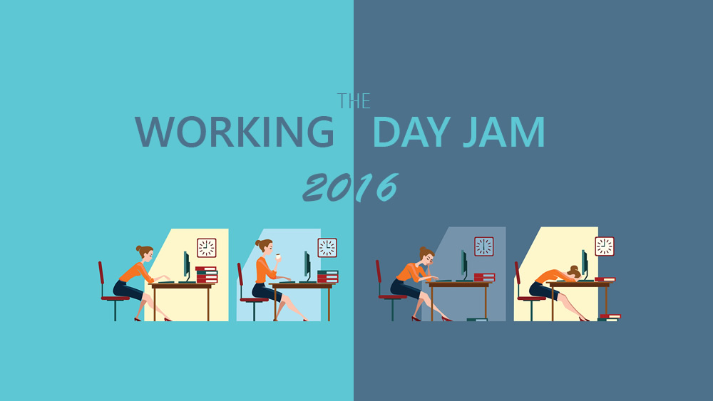

The Working Day Games Jam
Published: 2nd March 2016
On Saturday 27th February I attended The Working Day Games Jam at Huddersfield University. This event was organised and held by the Computing and Engineering School. The Working Day Games Jam had a theme which was Endless Games and ran from 9am till 5pm.

The objective of the day was to have a working game completed by 4:30pm which you would then present to the other teams. Every person would vote and the team with the most votes won a certificate, chocolate and a trophy.
The day started by getting into teams and planning what the game will be and what is required for the game. As I am not a games student nor I am that advanced with any of the back-end programming languages yet I felt that I couldn’t really offer too much to the team. However, as I have used Adobe Photoshop many times in the past I was given the job of creating assets for the game.
Once we had a plan of action in place we all got on with our individual tasks. As I mentioned above I was tasked with creating some of the assets for the game. These assets were to be 64 x 64 pixels and I created these using Adobe Photoshop. This meant the design of the game was pixelated.
The game we created was an endless scroller that was based on the theme of the deep ocean and was created using Unity 3D. The original idea was to create it using Stencyl which specifically focuses on 2D and visual coding but switched to Unity 3D when a programming student joined our team.
Slack, which is a real-time messaging app, was used to keep track of what each of us was working on and what we had done. We also used it to upload files for other team members to use.
The highlight of the event was the free pizza provided by the department because who doesn’t love pizza that is also free!
The final part of the day was presenting our games to each other. It was fantastic to see that each team had created a working game. Unfortunately, our team didn’t win of the prizes nor did we get any votes in any aspect of the game which is a little annoying as our game wasn’t that bad.
Overall the event was really good and well organised. It was a very productive day and I am glad that I went along to see what it was all about. The only downside was that it was focused on game development which unfortunately my skills were not fully tailored too. There are plans to do a Web Working Day Jam which I do hope goes ahead.
While I was at the event I decided to capture some video footage which you can watch in my first ever vlog.